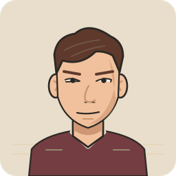
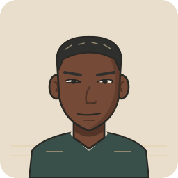
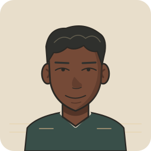
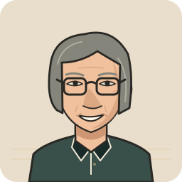
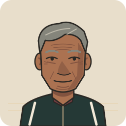
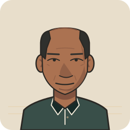

GOALETTO / ATELIER
Технический пилот комбинатора: три игрока и три сотрудника. Модульные SVG-части и выбранная палитра C — Dugout. этот простой пилот не повторяет детализацию концепт-листов.

PLAYER / 01player-07
PLAYER / 02player-19
PLAYER / 03player-31
STAFF / 01staff-03
STAFF / 02staff-14
STAFF / 03staff-28